Archives : 2008-03
试车会 @ Mar 31, 2008
周日去奥体参加MAZDA 2试驾会，很喜欢两厢的外型，目前是1.3和1.5排量如果我没记错的话。内饰比较简单，后轮是鼓刹，可能出于降低成本考虑的。手动挡8万多，自动档10.13万。价格似乎偏高。


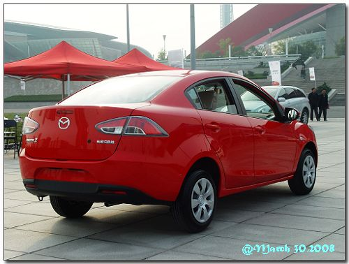
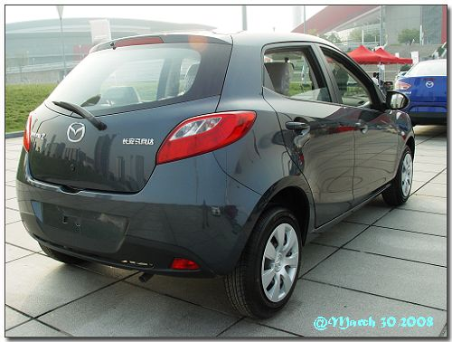

星期一.正装日 @ Mar 31, 2008


同事的婚礼 @ Mar 31, 2008
两位都是我的同事。
新娘子和华裔女明星刘玉玲长得很象，是位留英研究生。新郎与我同部门，自从有了这位新娘子，真有些“瓦尔特保卫萨拉热窝”的劲儿，好歹是人家第一次恋爱。祝福他们！
婚礼办的温馨而甜蜜，可我感觉不论哪场婚礼都有些小舞台剧的味道，下面的人边吃边看，上面的浓妆艳抹说着唱着朗诵皆流泪着....
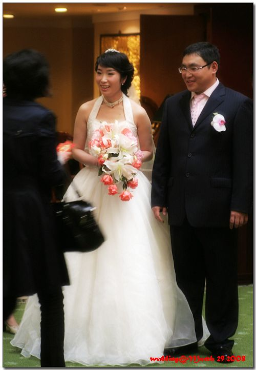


无题 @ Mar 27, 2008

在美国的中国人哪里来那么大的脾气? @ Mar 27, 2008
为什么这些在美国的中国人这么愤怒？我只能猜想两个原因：
第一，去美国的中国人起点比较高，多是读研究生后找到工作的，搞高技术的比较多，聚居在高技术高房价的地区的比较多。美国亚裔的中等收入已经超过白人，大部分在中上层。
第二，中国的教育太糟糕，培养的人自我中心，只根据自己的生活经验判断。看看现在国内，最富的人说要给富人免税，作家说要给作家免税。大家只看自己的生活和利益。这类人跑到外面也一样。我说的地方房子是偏便宜，但并不离谱。美国中等家庭收入将近五万，独居的中等价格已经落到二十万以下。这些人居然不读报纸！这是典型的中国教育娇惯出来的独生子：自以为是。
第三,去年我发表一篇文章,说美国大学文科助理教授的起薪,就五万上下,和当地公交司机差不多.只不过大学教授工作九个月,司机干一年.结果,许多海外留学生群起而攻之,说我骗人或者自己混得不好.后来有人用网上公开数据一一驳斥,他们才不说话了.其实,这些人大概是要忽悠国内人,抬高自己的身价.好回来找个百万员教授.或者在美国找不到工作,想回来捞一把,编出美国教授的高薪吓人.特提请大家警惕.
文章引用自： 薛涌-反智的书生
用香水的权利 @ Mar 26, 2008
每次用香水，办公室坐我隔壁的大妈都直嚷嚷， 开始没觉得有什么，渐渐次数多了心里就纳闷。为这个我尽量用清淡的香水，在她嚷嚷的时候把办公室的窗户打开。
开始没觉得有什么，渐渐次数多了心里就纳闷。为这个我尽量用清淡的香水，在她嚷嚷的时候把办公室的窗户打开。
今早上我用的是CHANNEL的ALLURE，最淡的那种。我一边打开附近所有的窗户一边发短信问自己的女友： 我用香水是不是真的侵犯别人权利了？
我用香水是不是真的侵犯别人权利了？
女友回道：“叫她滚远点，去她妈的蛋！”
大妈每天上班持续地哼小调，声音虽小但蚊子般的嗡嗡声，还会随着别人的手机彩铃转换旋律...曾被别的同事投诉影响他人工作， 她还是照样坚持她的爱好。我从十几岁就开始用香水，这爱好侵犯别人权利了吗？
她还是照样坚持她的爱好。我从十几岁就开始用香水，这爱好侵犯别人权利了吗？ 哪天受不了“嚷嚷”没准儿真会河东狮吼滴！
哪天受不了“嚷嚷”没准儿真会河东狮吼滴！
TOBY的春游 @ Mar 25, 2008
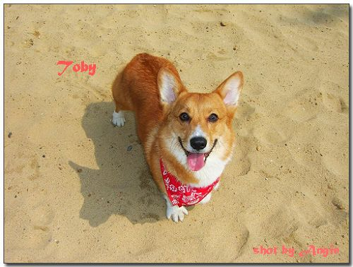
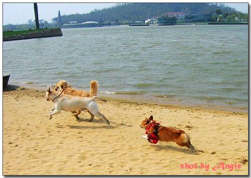
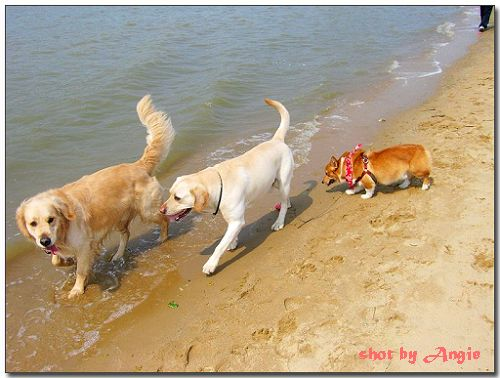
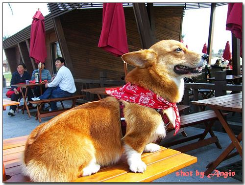
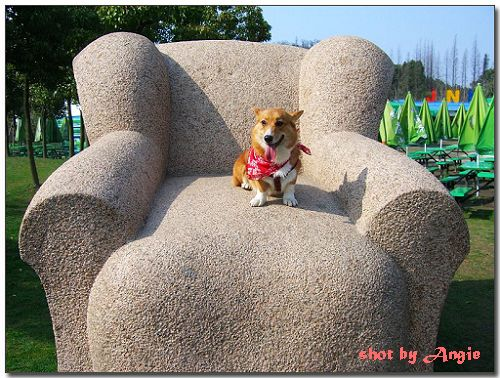
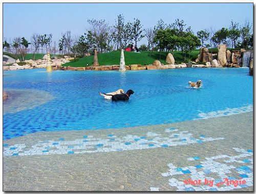
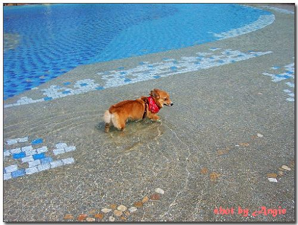
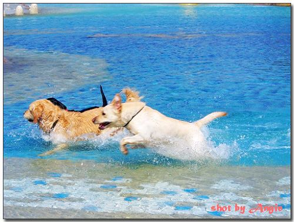
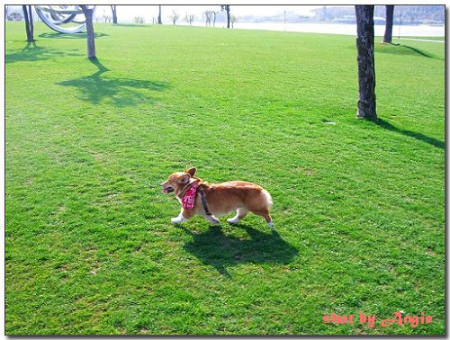
周末.上坟 @ Mar 24, 2008
常常因为夜晚或某个下午闻到春天的气息而感动，感受到生命的存在。
惦记着拍春天，未果。于是开始惦记四月婺源的油菜花...
周末看了两部电影： 《Once Upon a Time in America 》（美国往事） 、 《American Gangster》（美国黑帮） 。《Once Upon a Time in America 》准备了13年了才拍摄完成，影片最后主人公因为抽鸦片产生幻觉面露微笑，镜头定格在那张笑脸上影片结束，很利索地诠释了一个人，一个男人如梦幻般的一生！《American Gangster》则是2007年不可错过的电影，尤其是Denzel Washington的精彩演技！跟着大牌演员看电影大多不会出错，周末还看了部 《Southland Tales》（南方传奇） ，40多分钟过去了楞是没看明白，是偶欣赏水平不够还是片子太烂？！
周末和家人亲戚上坟，一路上那个堵，两个小时才达到目的地。
据说上坟也是踏青的好时节，好几万人在同一天上坟，青草怕是被重新踩回泥土中了。越来越庞大的墓地，真让人感到害怕，将来偶们不在了，这墓地还够用吗？上坟，体现着群体的浮躁，这本是一个肃穆凝重+怀念的场地情形，可的确更象是集体合法纵火，墓地内外、马路上的人跟逃荒似的，垃圾满天飞，我的披肩发差点被火点着。上坟这天风极大，是老祖宗们来拿钱了吗？
牛人闯西藏 @ Mar 24, 2008
我们4~5辆outlander ex计划5月开车去西藏的，3.14拉萨打砸抢烧事件发生后，这个计划不得不先放一放。可是居然有两个牛人3.14事件的第二天，成都飞拉萨的航班取消了，两人买了辆长安之星开到拉萨......一定要转一下这个帖子。
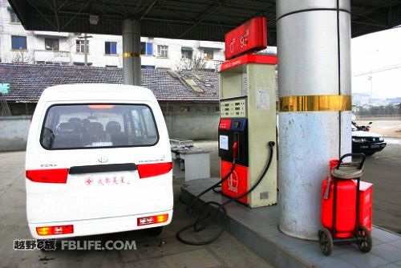
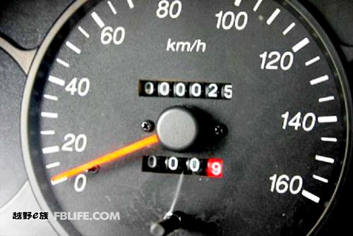
多事之秋 @ Mar 21, 2008
昨天晚上，看到CCTV 4 循环播放了两遍 “拉萨3月14日打砸抢烧暴乱纪实片”，
早晨醒来仍然心有余悸。国家政府不容易啊，社会团结稳定，国泰民安是我们民众应该拥护的！
5月的西藏之行搁浅了~

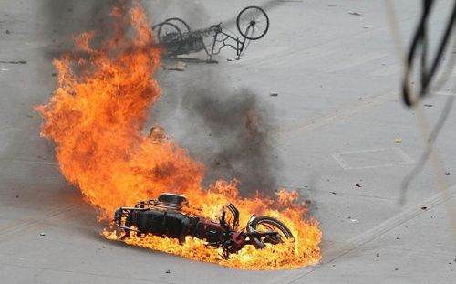


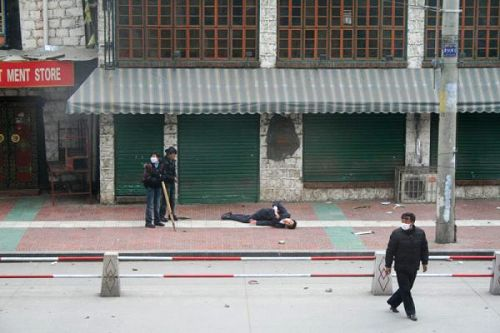
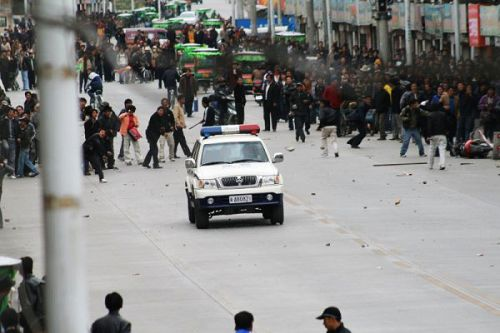
无题 @ Mar 19, 2008
软卧夜车。
其概念...四张硬卧四周加了层隔栏，这就是软卧。
隔壁打呼噜的声音让人以为自己的床上还躺着另外一个人。
被污浊的空气包裹着从夜晚到黎明，TVOC会是多少？
金华火车站上大多逃荒般肩抗手拎的民工，被出站口的警察粗暴地呼来吓去，不忍再看。民工小小的尊严与警察维护的国家安全相比算得了什么？
默声世界漫溢的轻快，由“说话+呼应的表情=一整天的伤神”所替代。
成功人士的长袖飞舞与侃侃而谈只是其使用的外衣，扒了它，什么都不是！
两周内看了几部电影。
印象深刻于Ben Affleck导演与其弟弟Casey Affleck主演的《Gone Baby Gone》（失踪人口）和Tom Cruise，Meryl Streep和Robert Redford主演的《Lions for Lambs》（狮入羊口）。这两部电影会触动内心深处的情感，看完后问自己，换了是我...我会怎么做？正义与邪恶，每个人皆有不同的角度和立场！
爱车第二次维修 @ Mar 11, 2008
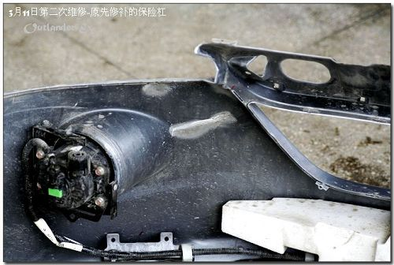
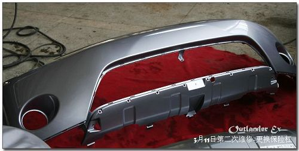
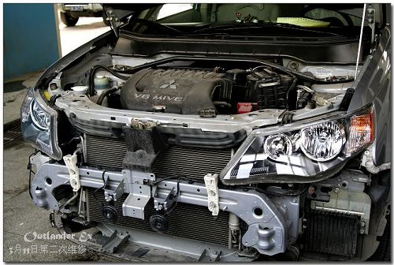
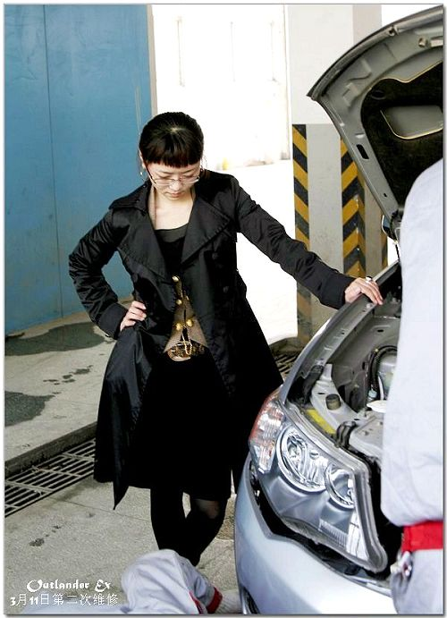
皮球的表情 @ Mar 10, 2008
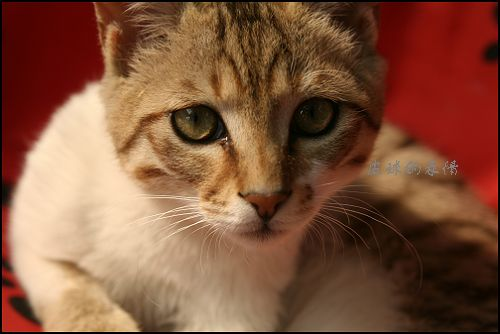
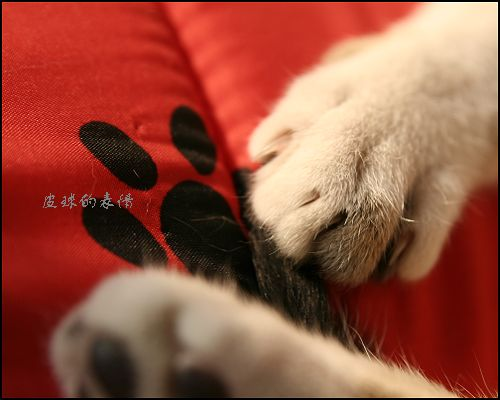
三十人生 @ Mar 07, 2008
搭god的车到公司，9：03。
比自己平时到公司要早。
在办公桌前坐下来，想起我们几个人god,jiajialing,Angie...的现状...
感伤，扰乱长久的平静，或者那不是平静，而应该是麻木...
人生其实不是二十几岁那样的，现实的人生应该是现在这样的。
裤装春天 @ Mar 06, 2008
除了今天，这周的阳光都极好，每每行驶在阳光里都会莫名的冲动，想要享受一整天的阳光不去上班。春天的阳光却让我热衷于裤装和便鞋，晚上可以花一两个小时找一条N年前穿的全棉宽腿裤和灯笼裤，只为配上刚买的这双ecco鞋，走在春天的路上无比轻快，好似回归~
爱车故事 @ Mar 05, 2008
某天看到一个电视节目，讲摩尔本的一对老夫妻，丈夫使用爱车已经23年了，7年前大修过。因为不放心所以每次都是自己洗车，那辆车崭新如初，引擎盖打开里面的零配件也擦得光亮照人，夫妻俩给这辆车取名“梦露”。可能“梦露”年代太久他们准备卖掉这辆车，丈夫心痛不已，含着眼泪看别人开走“梦露”。那辆车卖了900多澳币。买家父子是对超级胖子，儿子尤其喜欢收藏古典汽车，所以丈夫对梦露能有个好归宿而安心。
真没想到还有这样爱车的人，中国有吗？
每天早晨我都象个敢死队员，一路在高架上狂奔，经常赶在最后一分钟将右手食指按在打卡机上，有时延迟几分钟。看完着个节目我想我应该好好关爱与我每天早晨并肩作战的朋友！
有关愤青 @ Mar 01, 2008
dan 说:你怎么没把4点的晚餐吐出来？我是不会佩服愤青的。
说:为什么?
dan 说:如果他们自己真得很出色的话，不需要那么愤世嫉俗的、高声怒骂，并不是嗓门大就是有道理的。
说:有道理
dan 说:你不是也说了嘛。有时候沉默的并不是代表软弱。我强烈的同意！！！！（补充）